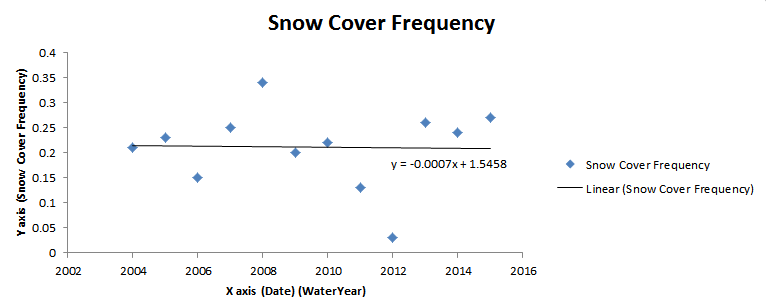

Learning objectives
- Join and modify MODIS datasets for time-series analysis.
- Calculate snow cover frequency (SCF) for specific water years.
- Use reducers to generate linear fit trends of snow cover.
- Visualize and export global maps for Google Earth.
Why it matters
Snow cover is a critical component of the global climate system and a primary water source for billions of people. Understanding how snow duration and extent are changing over time is essential for water resource management, flood forecasting, and climate change monitoring.
Project Overview
In this lab, you will create a GEE Program that simulates an online output for a Global Snow Observatory. We will use the Google Earth Engine JavaScript API to build a complete scientific workflow.
Mapping Goals
Our goal is to generate a worldwide map of the linear trend in snow cover frequency from water year 2004 to water year 2014.
Note: A water year is defined as October 1st to September 30th. It is labeled by the year in which it ends (e.g., Water Year 2004 runs from Oct 1, 2003 – Sept 30, 2004).
Snow Cover Frequency (SCF) is defined as:
We use this metric because satellites can't see through clouds. By dividing only by valid observations, we normalize for cloud cover.
Visualizing the Trend
Imagine a single pixel on the globe (approx. 500m²). Its snow cover frequency might fluctuate year to year. We want to calculate the slope of the linear fit trend line for every single pixel on Earth.
